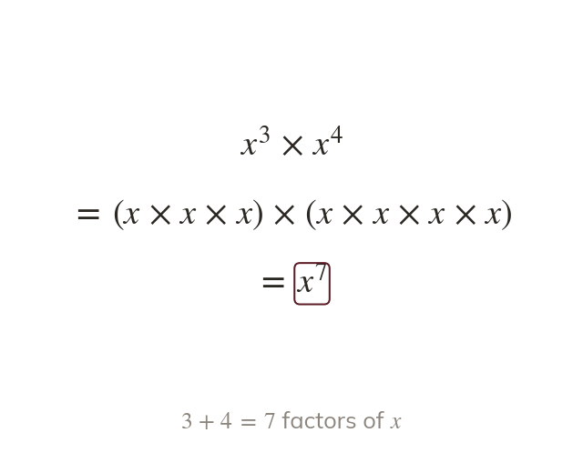
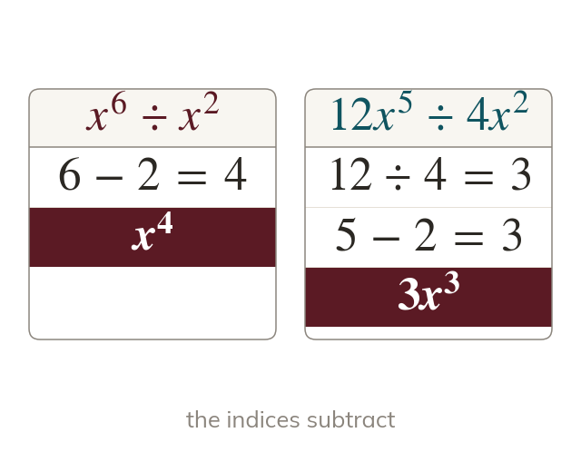
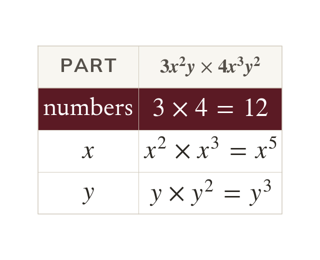
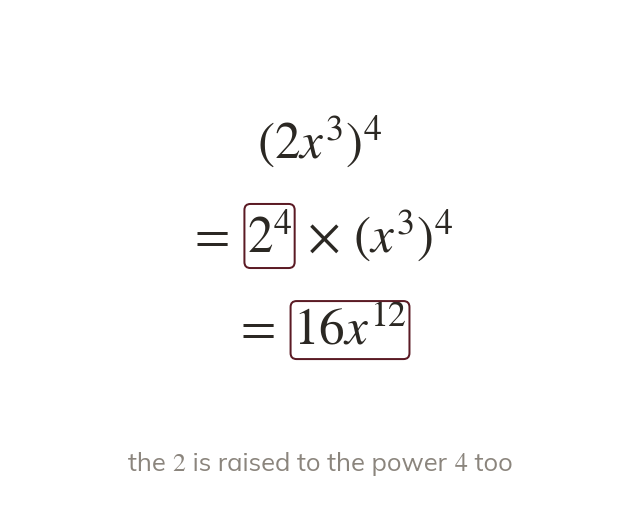
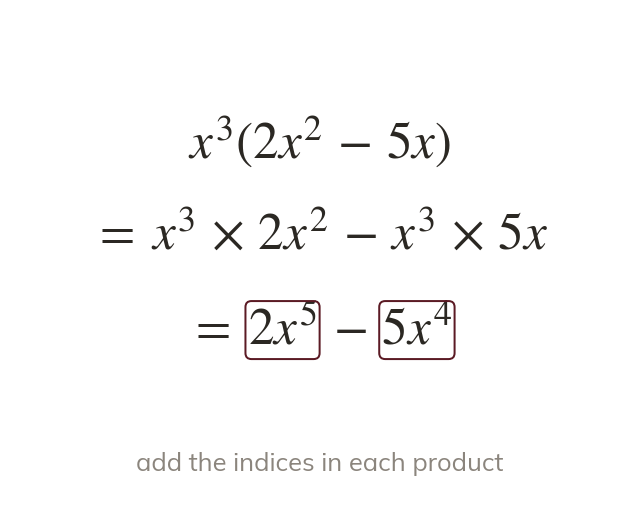
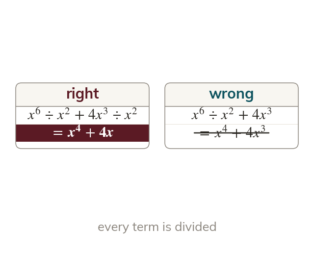

Multiplying powers
Multiplying powers of the same base adds the indices, because the factors are counted together. So
Every chapter of the course simplifies powers of , so the index laws need to be quick and sure. The next lessons use them to expand brackets and to take powers of out as common factors.
Work down the page at your own pace. Write every answer in your book first, then click to check it.
Read each card, then follow the worked examples one step at a time.

Multiplying powers of the same base adds the indices, because the factors are counted together. So

Dividing cancels the factors the two powers share, so the indices subtract. So

The coefficients multiply or divide as ordinary numbers. Each letter follows the index laws on its own, and different letters stay separate.
Pick an answer. If it's wrong, the feedback tells you which mistake it was.
Write the blanks in your book first, then tap each one to check.
Read each card, then follow the worked examples one step at a time.

A power outside a bracket raises every factor inside it, the number as well as the letter. So

A term outside a bracket multiplies each term inside, adding the indices each time. So

Each term of the numerator is divided by the denominator. So
Pick an answer. If it's wrong, the feedback tells you which mistake it was.
Write the blanks in your book first, then tap each one to check.
Finished? Next lesson: 12.P1.4 Negative and Fractional Indices.
For each skill, tap the one that is true for you today. Your Revise pages start with anything you mark Not yet.
Your ratings are saved on this device only.
Log in, then search for a code to practise that skill.